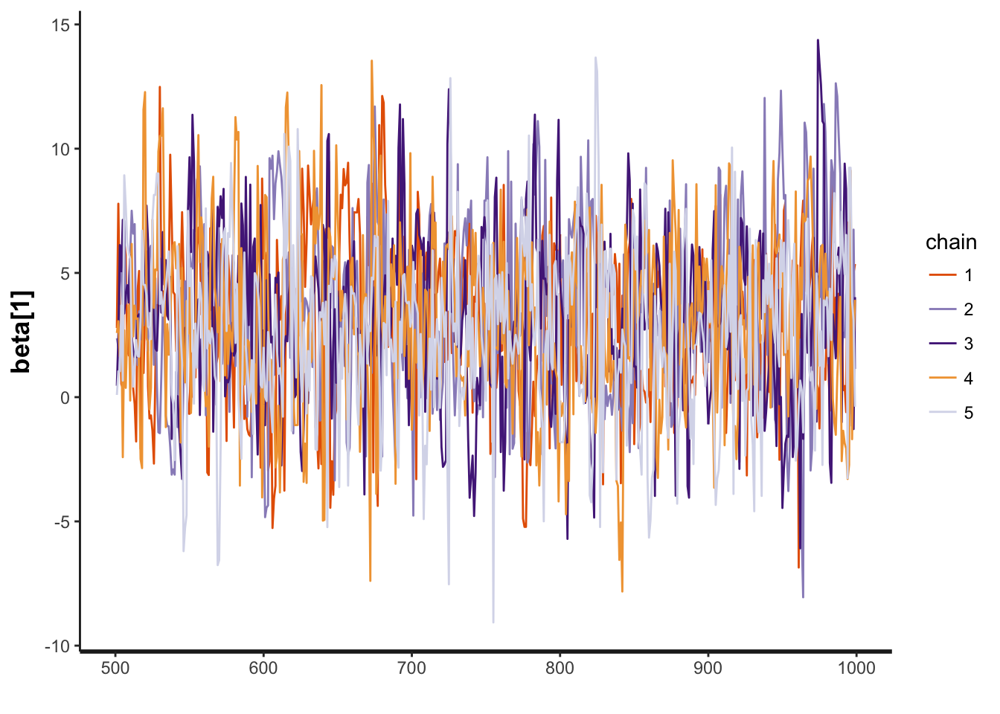
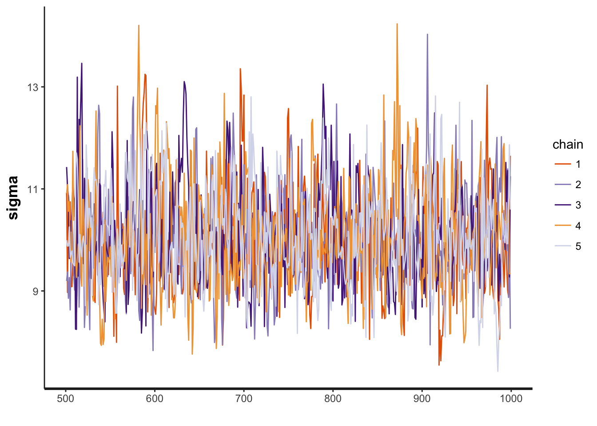
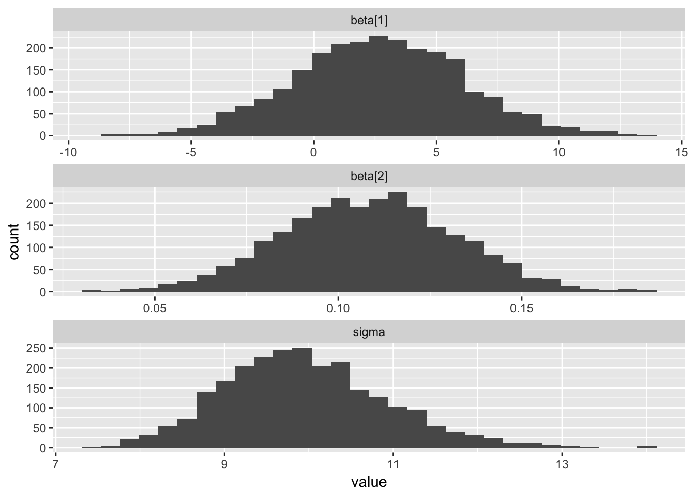
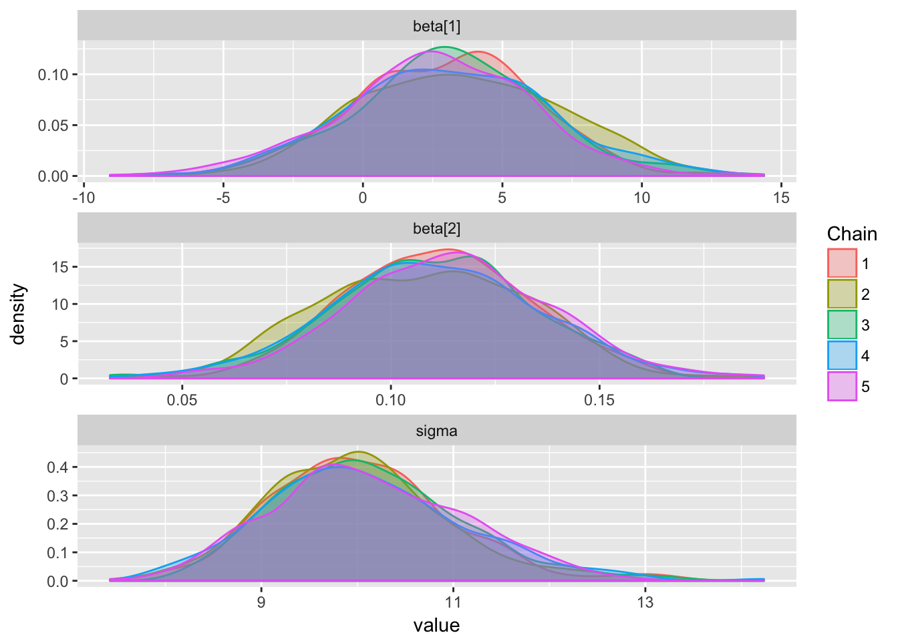
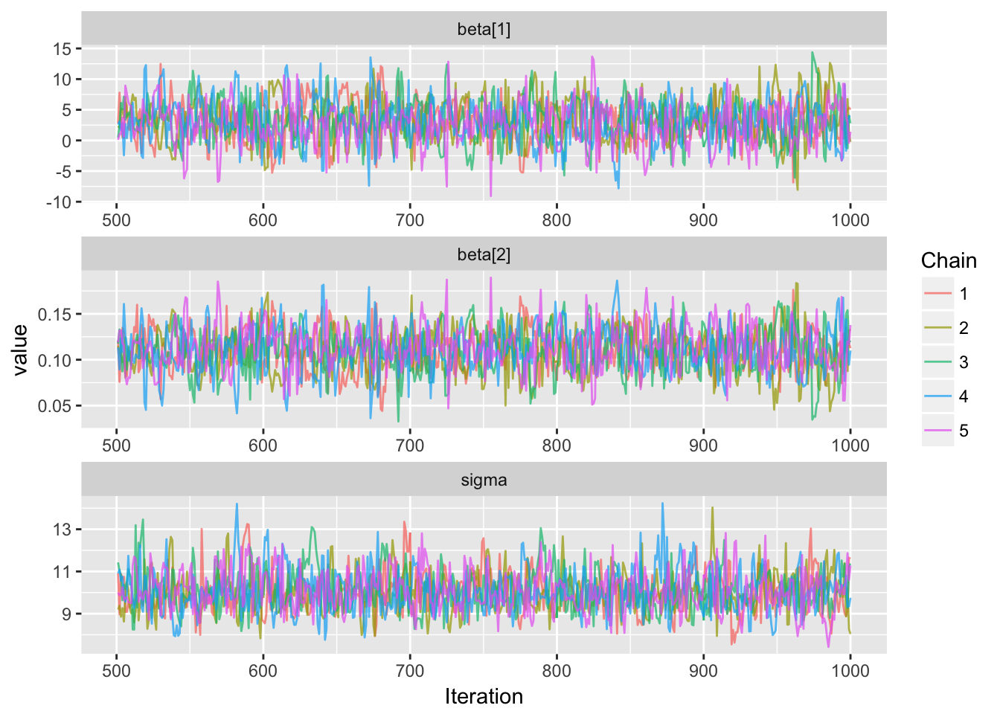
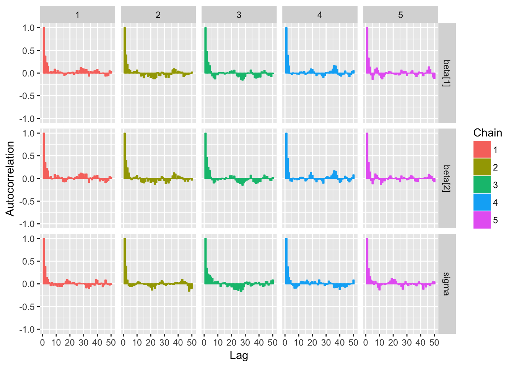
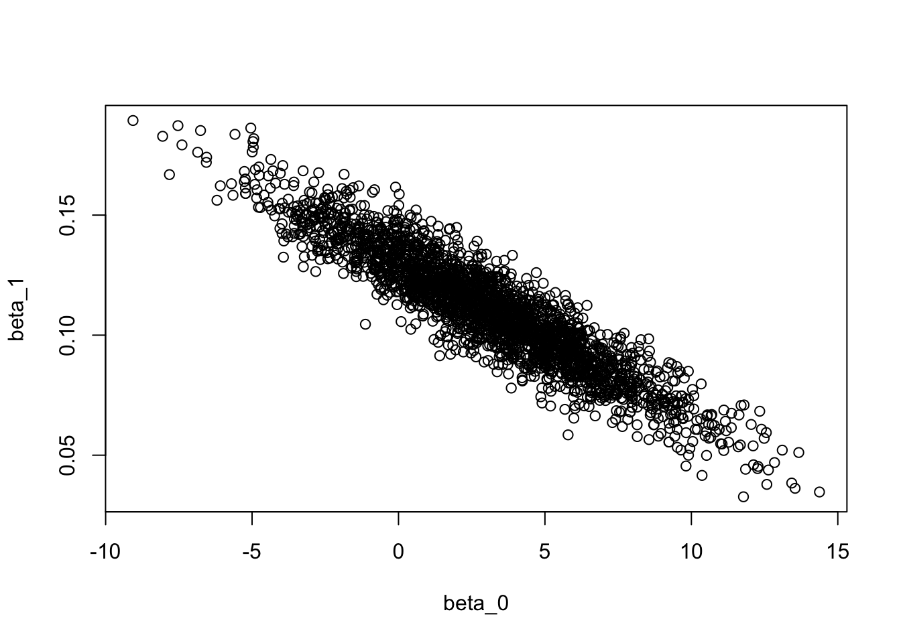
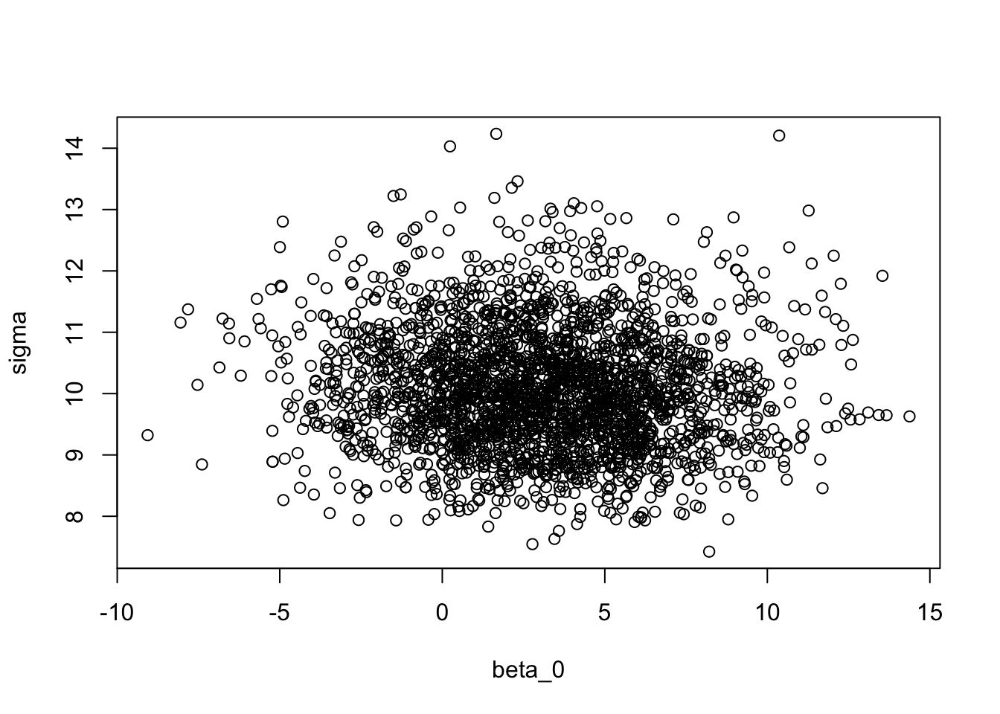
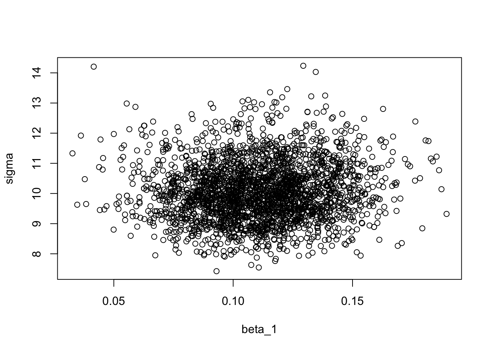

Bayesian Inference with Prior Information
Jes & Nicole
Assigned Reading:
Chapters 12 and 15 in Korner-Nievergelt et al. 2015. Bayesian data analysis in ecology using linear models with R, BUGS, and Stan. Elsevier. link
Key Points
Why use (weakly) informative priors?
- Uniform priors are unlikely representations of our actual prior state of knowledge.
- Supplying prior distributions with some information allows us to fit models that cannot be fit with frequentist methods. (example- all binary outcomes are the same or binary outcomes separated by a covariate)
- Supplying prior information mirrors the scientific process.
- Supplying prior information makes our assumptions explicit.
How do we fit models with non-uniform priors?
- To fit models with non-uniform priors we need to simulate parameter samples with MCMC.
- Mathematics proves that, given enough time, MCMC simulation methods produce samples of parameters from the joint posterior distribution.
- Once convinced that an MCMC chain has converged to the posterior, we can use samples from it to make inferences in the same way that we used samples from
sim, which were calculed analytically. - If you don’t have a lot of prior information, do a sensititivity analysis (where you change the prior distributions) to make sure that prior choice is not unduly influencing inference.
How do you choose prior distributions?
- Make sure that the prior distribution covers all possible values of a parameter and doesn’t allow any values that are impossible. (E.g. \(\sigma\) must be positive)
- Read this advice from the Stan community.
How do you make inferences from MCMC output?
- MCMC converges to the correct posterior distribution. Therefore initial samples are not from the distribution and we don’t want to make inference from them.
- BUGS: called “burn-in”, examine trace plot of full chain and decide on cut-off.
- Stan: called “warm-up”, not actually a Markov chain and will be automatically droped from samples if using
rstanpackage.
- Markov chains are autocorrelated (adjacent values depend on one another), especially when parameters are correlated.
- To get 1000 independent samples, you may need to run the chain for much longer than 1000 post-burnin iterations.
- Can use “thinning” to avoid storing chain values that you won’t actually use (e.g. save only 1 in 10 samples).
- Use the effective sample size (
n.eff) to determine how many independent samples are possible from your chains (and run longer if necessary). - Here’s a paper suggests when you should and shouldn’t thin MCMC chains: Link and Eaton 2011
How might MCMC fail?
- High autocorrelation within chains and correlation between parameters can cause:
- Chains get stuck and don’t sample from the full posterior distribution (e.g. show bad mixing).
- Multiple chains don’t sample from the same posterior distribution (initial starting values influence samples).
Complex models (especially hierarchical models) required longer to converge.
- Models will converge faster with mathematical tricks:
- Center and scale predictors (
scale(x, center = TRUE, scale = TRUE)will do:(x - mean(x))/sd(x)). - Use reparametrization to make it easier to estimate parameters, such as the variance of a random effect. See section 27, Optimizing Stan Code for Efficiency, on p. 333 in the Stan User’s Guide and Documentation.
- Center and scale predictors (
There is not enough data to estimate a parameter and the prior distribution is very vague.
How can you tell that MCMC results are reliable?
- Trace plots that show the value of each parameter through “time” should show good “mixing”.
- Trace plots from separate “chains” should converge on the same values.
- \(\hat{R} < 1.02\) shows that variance across multiple chains is the same.
Software comparison
| OpenBUGS (also WinBUGS, JAGS) | Stan |
|---|---|
| Older = more textbook and tutorial examples. | Newer = more active development. |
| Uses Gibbs sampling, Metropolis-Hastings algoritm or slice sampling. | Uses Hamiltonian Monte Carlo sampling and optimization-based point estimation. |
| Some details can be implicit. | All model details must be explicit. |
| Slower computation. | Faster computation, especially for hierarchical models and large data sets. |
| Limited number of functions available. | Many functions avaible. |
| Write models using loops. | Write models using loops or vector algebra. |
| Can only provide data used to fit the model. | Can provide extraneous data. |
| Must provide initial values. | Initial values optional. |
| Chains more autocorrelated. | Chains less autocorrelated. |
| Detailed documentation and examples | Detailed documentation and examples. |
Steps:
- Install Stan or OpenBUGS or JAGS
- Write down the model(s) you want to fit on paper.
- Specify prior distributions for all unknown parameters.
- Convert the model(s) to Stan (or BUGS) code in a text file.
- Create R objects containing the data needed to fit the model(s).
- Use
rstanorR2OpenBUGSorR2jags(or other package) to fit the models in R by referencing the model text file. - Examine trace plots, \(\hat{R}\) and effective samples sizes for each parameter.
- Examine correlations between parameters.
- Decide whether chains are sampling from the posterior distribution.
- Check whether priors are unduly influencing posterior.
- Proceed with model selection and validation by examining information criteria (WAIC) and residuals. Repeat steps 1-10 as needed to find an acceptable model.
- Use samples from final model after the burn-in period to make inferences.
R Tools
- The
codapackage is frequently used to visualize MCMC results. - Check out the
ggmcmcpackage for plotting MCMC results withggplot2: website
Analysis Example
In this analysis example, we’re going to build on the material covered in the last seminar Bayesian Inference from Linear Models. This will enable us to see the similarities and focus more on the differences between the two approaches: (1) using uniform prior distributions (i.e., flat priors or “noninformative” priors), and (2) using non-uniform prior distributions (i.e., informative priors) to perform Bayesian inference.
We will use the same dataset as before (Appendix A in Zuur et al. 2009. Mixed Effects Models and Extensions in Ecology with R). Again, we’re are going to look at how density of birds in a forest patch (continuous response variable = ABUND) differs by the mean altitude of a patch (continuous explanatory variable = ALT). However, this time we will apply prior distributions containing “prior knowledge” about the parameters used in our model.
The art of choosing prior distributions (or “priors”) is covered in Chapter 15 in Korner-Nievergelt et al. 2015. Bayesian data analysis in ecology using linear models with R, BUGS, and Stan. Most of the code is borrowed from section 12.3 (MCMC using Stan) in the same book.
Step 1: The model
Again, the dataset we’re going to use is shown below (but we’re only interested in the variables ABUND and ALT).
# Load dataset
Loyn <- read.table("data/Loyn.txt", header=T)
# Show information about the dataset
str(Loyn)## 'data.frame': 56 obs. of 8 variables:
## $ Site : int 1 2 3 4 5 6 7 8 9 10 ...
## $ ABUND : num 5.3 2 1.5 17.1 13.8 14.1 3.8 2.2 3.3 3 ...
## $ AREA : num 0.1 0.5 0.5 1 1 1 1 1 1 1 ...
## $ DIST : int 39 234 104 66 246 234 467 284 156 311 ...
## $ LDIST : int 39 234 311 66 246 285 467 1829 156 571 ...
## $ YR.ISOL: int 1968 1920 1900 1966 1918 1965 1955 1920 1965 1900 ...
## $ GRAZE : int 2 5 5 3 5 3 5 5 4 5 ...
## $ ALT : int 160 60 140 160 140 130 90 60 130 130 ...Although priors could be used for more complex models, we’re going to use a similar linear model as before (with the exception of adding the priors) where \(y =\) ABUND, \(x =\) ALT, \(\sigma =\) standard deviation, \(\beta_0 =\) intercept, \(\beta_1 =\) slope, \(Norm() =\) normal distribution and \(Cauchy()[0,] =\) truncated Cauchy distribution.
Stochastic part
\(y_i \sim Norm(\hat{y_i}, \hat{\sigma} )\)
\(\hat{\beta_k} \sim Norm(0, 5)\)
\(\hat{\sigma} \sim Cauchy(0, 5)[0,]\)
Deterministic part
\(\hat{y_i} = \hat{\beta_0} + \hat{\beta_1} x_i\)
Step 2: The priors
We’re going to pick prior distributions for our model parameters \(\sigma\), \(\beta_0\) and \(\beta_1\). Ideally, priors should be obtained from (or based on) results from previous studies. We want to be able to merge prior knowledge with information from our given dataset. The priors should be chosen so that they contain information about the range of possible values for a parameter and the plausible shape of the distribution of these values.
Parameter: Intercept and slope (\(\hat{\beta_k}\))
Unfortunately, I’m not that familiar with the “bird density and altitude” literature, so I don’t know what an optimal prior should look like. However, it is reasonable to assume that the intercept and the slope parameters can range from negative to positive values and that values near the endpoints (moving towards \(-\infty\) and \(\infty\)) are less common. As mentioned in the book, a standard weakly informative prior for a \(\beta_k\) parameter is a normal distribution with a mean at about 0 and a standard deviation of about 5, so \(Norm(\mu = 10, \sigma = 5)\). (Note: this depends on the units of our data, so we should probably do a thought experiment to decide whether the distributions shown below are reasonable for the actual values of bird density and altitude in our data.)
# Probability density function of the intercept and slope prior
xseq <- seq(-15, 15, 0.001)
plot(xseq, dnorm(xseq, 0, 5), type="l", xlab="", ylab="", yaxt="n", main="Intercept and slope parameter prior")Parameter: Sigma (\(\hat{\sigma}\) )
Choosing a prior for variance is tricky, especially without any previous knowledge about this particular bird-altitude system. We will thus use a standard weakly informative prior using a truncated Cauchy distribution with non-negative values (as described in the book).
# Probability density function of the variance (or rather standard deviation, sigma)
xseq <- seq(-15, 15, 0.001)
plot(xseq, dcauchy(xseq, location = 0, scale = 5), type="l", xlab="", ylab="", yaxt="n", main="Sigma parameter prior", xlim=c(0.55,15))
Step 3: Stan code
Here, we are converting the model into Stan code in a separate .stan text file (e.g., mcmc.stan). There are three main blocks of code: (1) data, (2) parameters and (3) model. Comments are preceded by //. The sample size N is the only “new” object that has to be declared and we define it as a non-negative integer. The beta (\(\beta\)) vector contains two elements, beta[1] \(= \beta_0\) and beta[2] \(= \beta_1\), and sigma (\(\sigma\)) is defined as a real continuous non-negative object.
data {
//Data objects declared
int<lower=0> N; //Sample size for MCMC simulations
vector[N] y;
vector[N] x;
}
parameters {
//Model parameter objects declared
vector[2] beta;
real<lower=0> sigma;
}
model {
//Prior distributions
beta ~ normal(0,5);
sigma ~ cauchy(0,5);
//Likelihood
y ~ normal(beta[1] + beta[2] * x, sigma);
}Step 4 & 5: Data objects in R and MCMC simulations using Stan
In a separate R script we can start by loading the R package rstan and defining our data objects from our dataset. Then, we run the MCMC simulations using the function stan(). Here, we choose to run 5 independent Markov chains for each parameter under 1000 iterations.
# Load Stan package
library(rstan)
# Declare data for Stan
y <- Loyn$ABUND
x <- Loyn$ALT
N <- nrow(Loyn)
datax <- list("N", "x", "y")
# Run Stan
mod <- stan(file = "code/05-B.stan", data=datax, chains=5, iter=1000)
# Save the mod object as an RData file to read in later (so you don't have to redo simulation)
save(mod, file = "data/05-B-stanmod.RData")
# Here is another way to first compile the model before sampling from it so that you don't have to re-run the compiling
# Read the mod object back in
load("data/05-B-stanmod.RData")Step 6: MCMC analysis
print(mod, c("beta", "sigma")) # Printing the MCMC output## Inference for Stan model: 05-B.
## 5 chains, each with iter=1000; warmup=500; thin=1;
## post-warmup draws per chain=500, total post-warmup draws=2500.
##
## mean se_mean sd 2.5% 25% 50% 75% 97.5% n_eff Rhat
## beta[1] 2.96 0.11 3.48 -3.89 0.66 2.94 5.35 9.79 980 1
## beta[2] 0.11 0.00 0.02 0.07 0.10 0.11 0.13 0.16 979 1
## sigma 10.06 0.03 0.99 8.35 9.33 9.99 10.69 12.20 1391 1
##
## Samples were drawn using NUTS(diag_e) at Mon Nov 06 08:08:10 2017.
## For each parameter, n_eff is a crude measure of effective sample size,
## and Rhat is the potential scale reduction factor on split chains (at
## convergence, Rhat=1).In the output above, mean refers to the mean of the marginal posterior distribution from the simulations for each parameter, se_mean refers to the the standard error of the simulations (MCMC error) since se_mean = sd/n_eff, and sd refers to the standard deviation of the marginal posterior distribution from the simulations for each parameter. The percentages are the quantiles of the posterior distribution for each parameter. Finally, n_eff is the effective sample size and the potential scale reduction factor, \(\hat{R}\), is basically 1, which is good since it’s supposed to be \(< 1.02\). It is comparing the uncertainty (or variation) between chains with the uncertainty within a chain. Note: beta[1] \(= \beta_0\) and beta[2] \(= \beta_1\).
To test for the unwanted non-convergence (!) we can plot traceplots (iterations against parameter sample values).
traceplot(mod, "beta[1]") 
traceplot(mod, "beta[2]") traceplot(mod, "sigma")
It seems like all 5 chains converged after about 500 iterations, so that is good. This means that we have obtained posterior distributions for our three parameters that could be used for Bayesian inference.
Next, lets use the ggmcmc R package to visualize our MCMC results a bit more.
# Loading graphics packages
library(ggplot2)
library(ggmcmc)
# Save MCMC output as a ggs data frame
mcmcData <- ggs(mod)
str(mcmcData)## Classes 'tbl_df', 'tbl' and 'data.frame': 7500 obs. of 4 variables:
## $ Iteration: num 1 2 3 4 5 6 7 8 9 10 ...
## $ Chain : int 1 1 1 1 1 1 1 1 1 1 ...
## $ Parameter: Factor w/ 3 levels "beta[1]","beta[2]",..: 1 1 1 1 1 1 1 1 1 1 ...
## $ value : num 2.048 5.187 -0.871 -0.433 0.992 ...
## - attr(*, "nChains")= int 5
## - attr(*, "nParameters")= int 3
## - attr(*, "nIterations")= num 500
## - attr(*, "nBurnin")= num 500
## - attr(*, "nThin")= num 1
## - attr(*, "description")= chr "05-B"ggs_histogram(mcmcData)
ggs_density(mcmcData)
ggs_traceplot(mcmcData)
ggs_autocorrelation(mcmcData)
ggs_crosscorrelation(mcmcData)More functions for performing MCMC posterior distribution analysis can be found here.
Step 7: Extracting MCMC results and testing for parameter correlations
If parameters are correlated then MCMC can fail as explained in the Key Points section.
# Extracting our parameters from the MCMC output and save it as a new data frame
modSims <- rstan::extract(mod)
str(modSims)## List of 3
## $ beta : num [1:2500, 1:2] 1.82 1.32 -2.05 4.97 1.93 ...
## ..- attr(*, "dimnames")=List of 2
## .. ..$ iterations: NULL
## .. ..$ : NULL
## $ sigma: num [1:2500(1d)] 8.47 11.16 9.81 10.65 10.05 ...
## ..- attr(*, "dimnames")=List of 1
## .. ..$ iterations: NULL
## $ lp__ : num [1:2500(1d)] -157 -157 -157 -156 -156 ...
## ..- attr(*, "dimnames")=List of 1
## .. ..$ iterations: NULL# Scatter plots of parameters to look for correlations
plot(modSims$beta[,1], modSims$beta[,2], xlab="beta_0", ylab="beta_1")
plot(modSims$beta[,1], modSims$sigma, xlab="beta_0", ylab="sigma")
plot(modSims$beta[,2], modSims$sigma, xlab="beta_1", ylab="sigma")
There seems to be a correlation between the intercept parameter \(\beta_0\) and the slope parameter \(\beta_1\). This is not ideal, and there are ways to deal with this issue (this will be discussed in Advanced Bayesian model example). Thankfully, the \(\sigma\) parameter does not correlate with any of the other parameters.
Normally, we would perform a prior sensitity analysis to see whether the posterior distributions are influenced by the defined prior distributions and maybe modify our priors accordingly until we are fully satisfied with our model (and repeating steps 1-7).
Step 8: Inference
Now that we have our joint posterior distribution \(p(\theta | y)\) we can perform Bayesian inference much like in the previous seminar session (based on similar code).
newData <- data.frame(x=seq(min(Loyn$ALT), max(Loyn$ALT), by=0.1))
newMatrix <- model.matrix(~x, newData)
b <- apply(modSims$beta, 2, mean)
newData$mod <- newMatrix %*% b
nsim <- nrow(modSims$beta)
fitmat <- matrix(ncol=nsim, nrow=nrow(newData))
for(i in 1:nsim){
fitmat[,i] <- newMatrix %*% modSims$beta[i,]
}
# 95% CrI lines
newData$fitupper <- apply(fitmat, 1, quantile, prob=0.975)
newData$fitlower <- apply(fitmat, 1, quantile, prob=0.025)
# Linear regression
linearModel <- lm(ABUND ~ ALT, Loyn)
plot(Loyn$ALT,Loyn$ABUND, pch=16, las=1, cex.lab=1.2, xlab="Mean altitude of a patch", ylab="Density of birds in a patch")
abline(linearModel, lw=2) # Linear regression line
lines(newData$x, newData$fitupper, lty=3)
lines(newData$x, newData$fitlower, lty=3) The regression line (solid) is supposed to act as a reference for the 95% CrI (dashed lines) obtained with prior information when comparing it with the CrI obtained with uniform priors in the previous seminar. The results using non-uniform priors differ only slightly, as expected.
Discussion Questions
- Why is the \(\hat{R}\) threshold set at 1.02 (or less strictly at 1.1)?
- How can mixing or homogenous sampling be discerned in the traceplots?
- What’s the golden rule when it comes to choosing optimal priors? They should not be (1) too strong, so that they are not providing us with additional information (not found in the dataset - too much overlap between prior and posterior), but also not too weak (2) to not influence the results due to lack of prior knowledge. Is there a better way than exploring different options via trail and error?